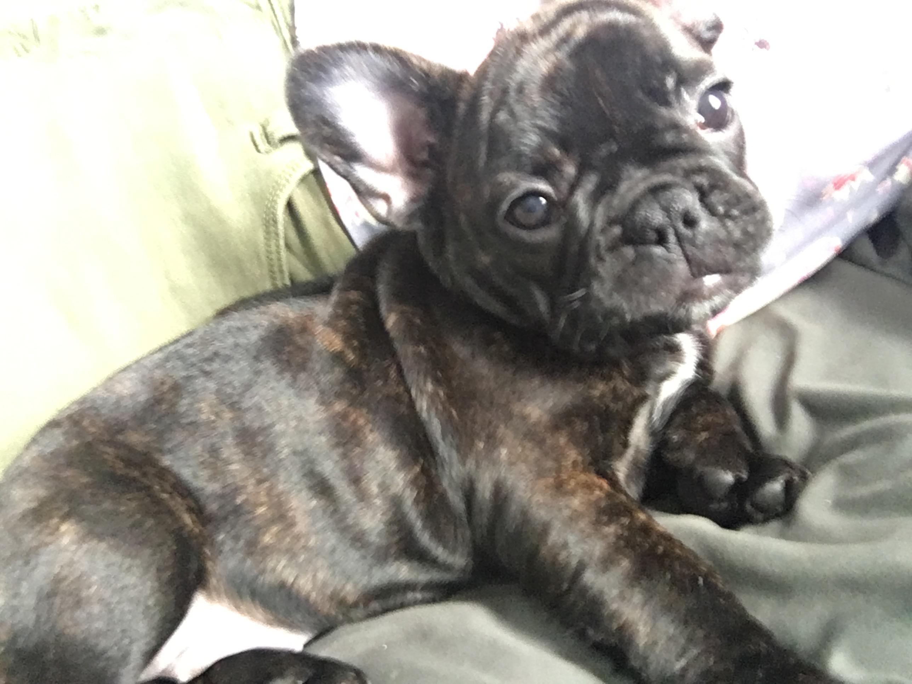
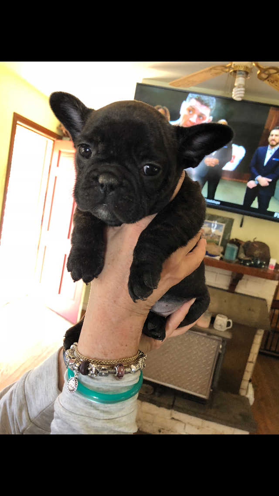
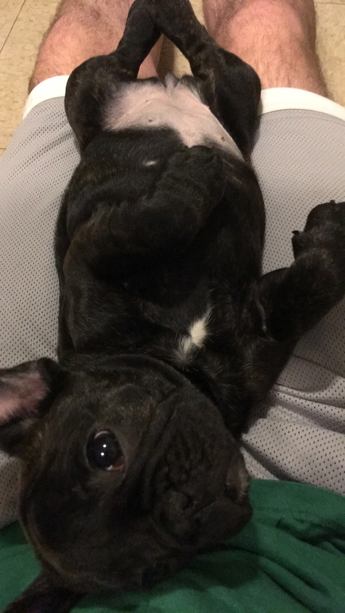
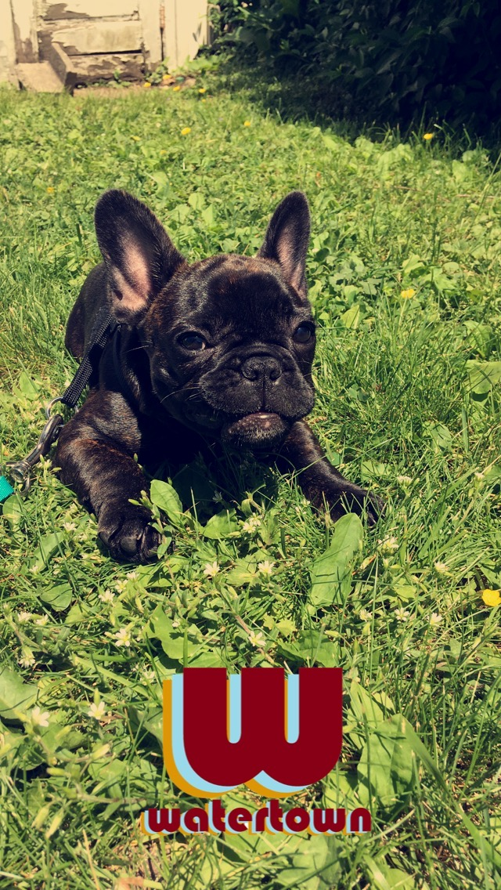
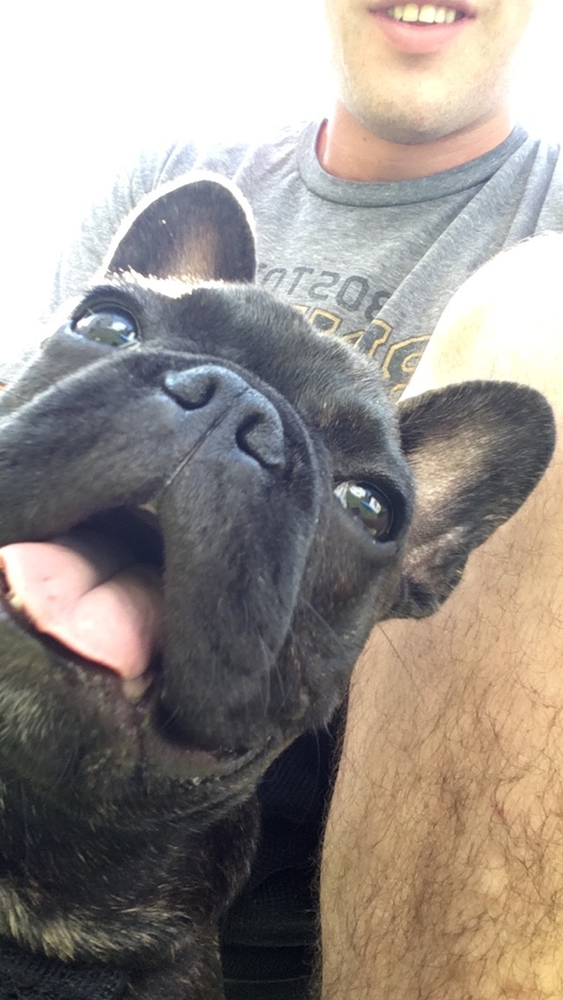
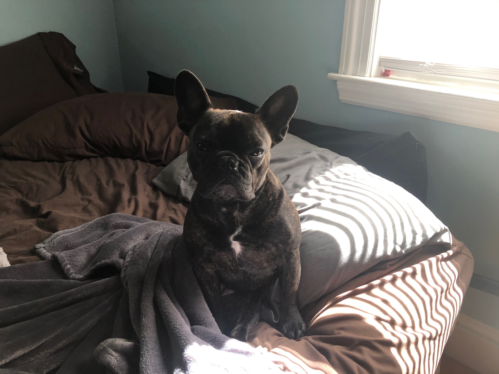
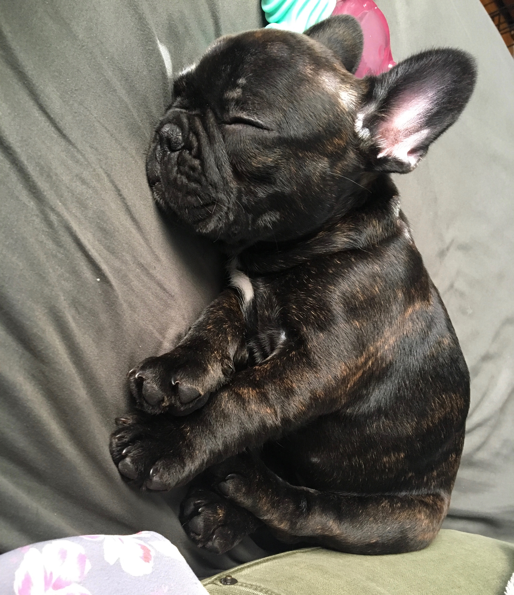
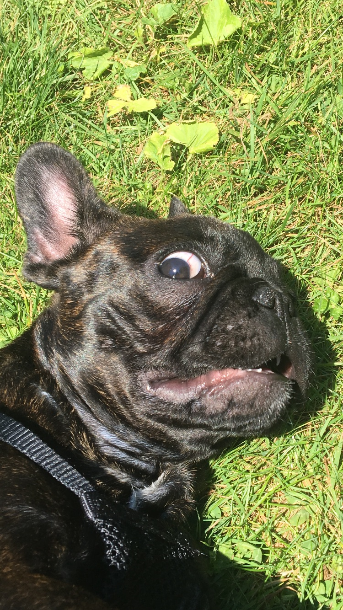

Chloe

Biography
Chloe was born in March, 2018 to a beautiful pair of Frenchie parents. She was lucky enough to be adopted by the Stinehart family. They took her in and showered her with love. Chloe grew rapidly, gobbling food at every chance and mowing down lesser dogs at the park. After being bitten by a radioactive ant that she tried to eat, she turned into Super Chloe. She didn't get any powers but her farts got worse.
Chloe Facts
- She weighs 23 freedom units.
- She can do tricks but doesn't listen to commands unless there is food.
- She once pooped four times in one day.
- She is trans species identifying as a cat.
- She hates cats.
- She can sorta swim.
- She graduated from Oberlin College in 2019.
Gallery
- 
- 
- 
- 
- 
- 
- 